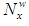
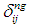
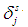

This index counts the parametric number of water molecules surrounding a residue in a protein folded state.
Where  means the number of water molecules associated to a polar residue,  is a parameter that takes value one if a residue j if within 9.4 of residue i and cero otherwise,  takes value one if the residue is superficial (i.e. its accessible surface area is different than cero) and cero otherwise.